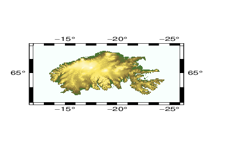

(3) Orbiting a static map¶
Our third animation keeps a fixed gridded data set but moves the camera angle around the full 360. We use grdview to generate a shaded-relief image sequence using the new enhanced -E option. No additional information is plotted on the image. As before we produce an animated GIF image and a simple HTML wrapper for it.
#!/usr/bin/env bash
# GMT ANIMATION 03
#
# Purpose: Make web page with simple animated GIF of Iceland topo
# GMT modules: grdclip, grdgradient, makecpt, grdview, movie
# Unix progs: echo, cat
# Note: Run with any argument to build movie; otherwise 1st frame is plotted only.
if [ $# -eq 0 ]; then # Just make master PostScript frame 27 (az = 135)
opt="-M27,ps -Fnone"
ps=anim_03.ps
else # Make animated GIF, infinitely looping
opt="-A+l"
fi
# 1. Create files needed in the loop
cat << EOF > pre.sh
gmt math -T0/355/5 -o1 T = angles.txt
gmt makecpt -Crelief -T-2000/2000/20 > iceland.cpt
gmt grdclip -Sb0/-1 -Gabove.nc @Iceland.nc
EOF
# 2. Set up the main frame script
cat << EOF > main.sh
gmt begin
gmt grdview above.nc -R-26/-12/63/67 -JM2.5i -Ciceland.cpt -Qi100 -Bafg \
-X0.5i -Y0.5i -p\${MOVIE_COL1}/35+w20W/65N+v1.5i/0.75i
gmt end
EOF
# 3. Run the movie
gmt movie main.sh -C4ix2.5ix100 -Nanim_03 -Tangles.txt -Sbpre.sh -D10 -Z $opt
rm -rf main.sh pre.sh

{kind=link}
Orbiting a static map.